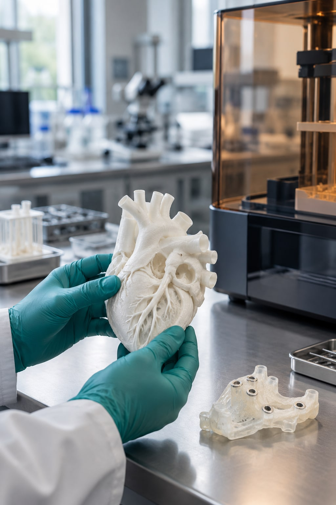
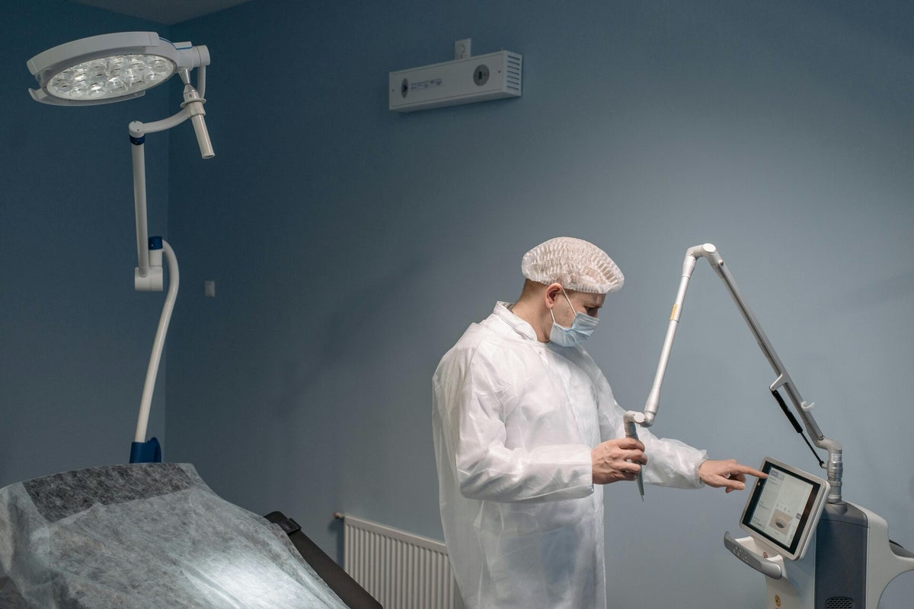
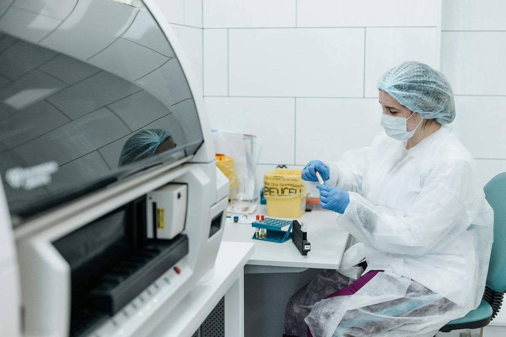

Prototypowanie i druk 3D
Od modelu koncepcyjnego po funkcjonalny prototyp. Projektujemy elementy, dobieramy technologię i przygotowujemy krótkie serie.
- CAD
- Druk 3D
- Krótkie serie
Prototypowanie · R&D · Medtech
Projektujemy, prototypujemy i rozwijamy technologie dla medycyny i przemysłu — precyzyjnie, interdyscyplinarnie i z myślą o realnym zastosowaniu.

Kompetencje
Łączymy projektowanie mechaniczne, elektronikę, oprogramowanie i prace badawcze. Dzięki temu pomysł nie ginie pomiędzy wykonawcami, a kolejne decyzje tworzą jeden spójny proces.
Od modelu koncepcyjnego po funkcjonalny prototyp. Projektujemy elementy, dobieramy technologię i przygotowujemy krótkie serie.
Łączymy warstwę sprzętową z oprogramowaniem, tworząc kompletne i gotowe do testowania rozwiązania technologiczne.
Prowadzimy prace badawczo-rozwojowe oraz zapewniamy wsparcie techniczne, eksperckie i doradcze na kolejnych etapach projektu.
Jak pracujemy
Każdy projekt ma inne tempo i skalę. Stały pozostaje porządek: najpierw rozumiemy problem, potem budujemy i sprawdzamy.
Zacznijmy od rozmowyZaczynamy od celu, ograniczeń i realnego kontekstu użycia rozwiązania.
Szybko przekładamy założenia na model, elektronikę i działający prototyp.
Weryfikujemy rozwiązanie, wyciągamy wnioski i przygotowujemy kolejny etap wdrożenia.
Dla kogo
Wspieramy zespoły medyczne i przemysłowe rozwijające nowe produkty, urządzenia i procesy. Realizujemy także prototypy i wydruki 3D dla klientów indywidualnych.
Prototypy urządzeń, modele i rozwiązania wspierające rozwój technologii medycznych.
Wsparcie konstrukcyjne, elektroniczne i programistyczne dla nowych produktów.
Druk 3D i prototypowanie pomysłów wymagających technicznego przygotowania.
Obszary realizacji
Od stanowiska badawczego, przez prototyp urządzenia, aż po rozwiązanie gotowe do kolejnego etapu rozwoju.


Nowy projekt
Napisz, nad czym pracujesz i na jakim etapie jest projekt. Wrócimy z pytaniami, które pozwolą określić najlepszy kolejny krok.